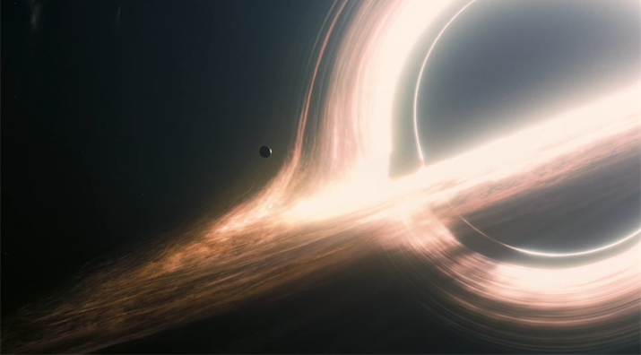

Christopher Nolan’s movie Interstellar is one of the most beautifully depicted space films ever produced.
From using Einstein’s theory of relativity to supermassive black holes, the movie uses actual physics to
enhance the story. Supermassive black holes are one of the most powerful things in space, with their mass
and gravity able to stop even light from escaping. Einstein’s theory of relativity allows for time dilation
seen in the movie, in which time moves differently at different points of space, and the theory of wormholes
is explained.
Introduction
Have you ever thought about how realistic the movie Interstellar is? It has been one of my favourite movies ever,
captivating me into wanting to study physics, especially about space. I will be going through the physics behind
the main parts of the story, such as supermassive black holes, how gravity impacts time, and wormholes between
different parts of space-time.
Supermassive Black Holes

Figure 1: The depiction of a supermassive black hole in Interstellar - Gargantua
The supermassive black hole Gargantua (Figure 1) was one of the most significant parts of the movie.
The production of the black hole within the movie had immense amounts of research behind it, as it was
extremely hard to visualise black holes, with the nearest one residing around 27,000 light years away.
Supermassive black holes are black holes that are more than 100,000
times the mass of the sun and are thought to be the centre of all large galaxies, including the milky
way.
It is unknown how they are formed in the first place, but a theory
is that pairs of black holes crash into one another which forms a single larger black hole, which was
discovered in 2015 with evidence from gravitational waves. For example, the largest supermassive black
hole is Abell 1201
, which is 30 million times the size of the sun.
Regular sized black holes, up to 20 times the mass of the sun are created when large stars collapse upon
themselves when they run out of fuel, causing a supernova explosion. The mass of the star will start collapsing
inwards towards the centre of the star, and the star will continue to fall inwards towards the centre forever.
At this point, the star has become a black hole, and the is a point where light is not able to escape the
gravitational force, called the event horizon.
Black holes are not able to be observed directly
due to the fact they do not emit light but are able to be observed via the effects of their gravitational
fields on nearby matter.
In the movie, we can see a disk around Gargantua (the black hole),
called the accretion disk which is a flattened circular structure formed when material falls towards the
black hole due to its gravity. Due to the fact that angular momentum is conserved, the rotations of any
falling material are amplified, therefore colliding particles convert the kinetic energy of the collision
into heat, which causes them to release x-rays, which is important for astronomers as it is a way for them
to observe and locate black holes,
for example Figure 2, which shows the accretion disk
of galaxy M87, which located the black hole allowing it to be photographed. In the film, Gargantua is seen
Figure 2: Accretion Disk of the black hole at the centre of galaxy M87
to be black with a very bright accretion disk around it, but in real life, the doppler effect would have
impacted the accretion disk more, in which the approaching side of the disk would be more blueish white,
while the side receding would be much redder, as the disk is spinning very quickly.
Time Dilation
The way Kip Thorne and Christopher Nolan depicted time dilation was through Miller’s planet, which orbited the
supermassive black hole Gargantua. Through some equations generated by physicist Kip Thorne, it was depicted that
for every hour spent on Miller’s planet, seven years would pass on Earth. As Cooper, the main character and his crew
travel down towards the planet, they find the wreckage of Miller’s ship, which was still fresh and all still
together. They soon realise that although Miller landed there 21 earth years ago, it would have only been three
hours on that planet due to time dilation. Time dilation is a phenomenon that occurs due to the theory of special
relativity, originally created by Albert Einstein. Special relativity explains how the speed of an object affects
mass, time and space, as when objects are approaching the speed of light, the mass of the object becomes infinite
therefore causing the energy required to move it to be infinite as well.
Special relativity only applies
to cases of which we are discussing ultra-fast speeds, astronomical distances and huge energies, as objects
are needed to be traveling close to the speed of light. From the discovery of special relativity, Einstein tried
to account for all phenomena, which led to the discovery of General relativity, which is the relationship between
gravity and time.
Therefore the more it warps, time moves slower relative to other
objects when it is warped on the object. This explains the time dilation in the movie, as the planet was close to
Gargantua, the supermassive black hole would have warped space time massively, therefore causing significant
amounts of time dilation when there.
Wormholes
Another part of the movie was the wormholes, appearing within the first hour, the wormhole transported Cooper and
his crew toward Gargantua. Wormholes are very theoretical, in which is a tunnel between two points in space time,
such as black holes. It has not been proven that wormholes do exist but there are theories behind it. Figure 4 shows
how wormholes should theoretically work, as the blue is the fabric of space time, wormholes create a hole through
it which would allow for quick travel from one area in space to another quickly.
However, in real life wormholes are unstable, and although there have been theories
proposed to stabilise them, there has been no evidence that they can work because there is no evidence that wormholes
even exist.
The creation of Interstellar has helped scientists visualise black holes, and has allowed them to research and
understand them more in depth. Christopher Nolan creating this movie with the actual scientific theory behind it has given
it an extra layer, with supermassive black holes, special relativity, time dilation, and wormholes being scientifically
accurate within the film.
References
Supermassive black hole | astronomy | Britannica. (2020). In: Encyclopædia Britannica. [online]
Accessed by: https://www.britannica.com/science/supermassive-black-hole (Accessed: 28 October 2023).
Interesting Engineering (2016). How the Movie ‘Interstellar’ Led to the Discovery of Scientific Phenomena.
[online] interestingengineering.com. Accessed by: https://interestingengineering.com/science/interstellar
-led-to-discovery-scientific-phenomena (Accessed: 28 October 2023).
NASA (2018). Black Holes | Science Mission Directorate. [online] Nasa.gov. Accessed by:
https://science.nasa.gov/astrophysics/focus-areas/black-holes/ (Accessed: 28 October 2023).
Andrew May Contributions from Scott Dutfield published (2022). Supermassive black holes:
Theory, characteristics and formation. [online] Space.com. Accessed by:
https://www.space.com/supermassive-black-hole (Accessed: 28 October 2023).
black hole | astronomy | Britannica. (2023). In: Encyclopædia Britannica. [online]
Accessed by: https://www.britannica.com/science/black-hole.
Johnson, D.K. (2021) Time Travel in ‘Interstellar’: Time Dilation and Causal Loops, Wondrium Daily.
Accessed by: https://www.wondriumdaily.com/time-travel-in-interstellar-time-dilation-and-causal-loops/ (Accessed: 28 October 2023).
Perkowitz, S. (2019). Wormhole | physics.
Accessed by: https://www.britannica.com/science/wormhole (Accessed: 28 October 2023).
Interstellar Wiki (No Date) Accessed by: https://interstellarfilm.fandom.com/wiki/Gargantua
BBC (2019). Accessed by: https://www.bbc.co.uk/newsround/47868061
Momentum and Elasticity Physics in Games - Scientific Figure on ResearchGate (No Date).
Accessed by: https://www.researchgate.net/figure/Diagram-showing-astral-bodies-with-different-masses-effects-on-spacetime-Image-credit_fig2_372420401 [accessed 5 Dec, 2023]
Pandit, Girish. (2011) "WormHoles Tunnel for Time Travel." Simplelivinghighthinking. Simplelivinghighthinking.
Accessed by: http://itsmyviewofthings.blogspot.com/2011/01/wormholes-tunnel-for-time-travel.html
Conference Presentation: The Physics behind Interstellar